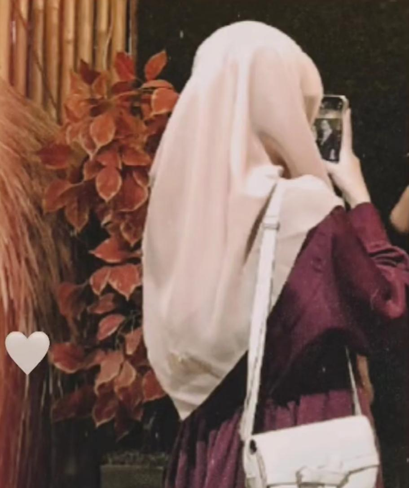
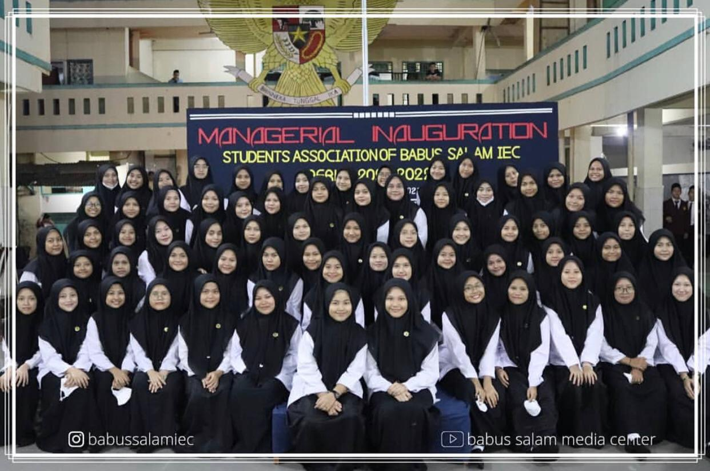
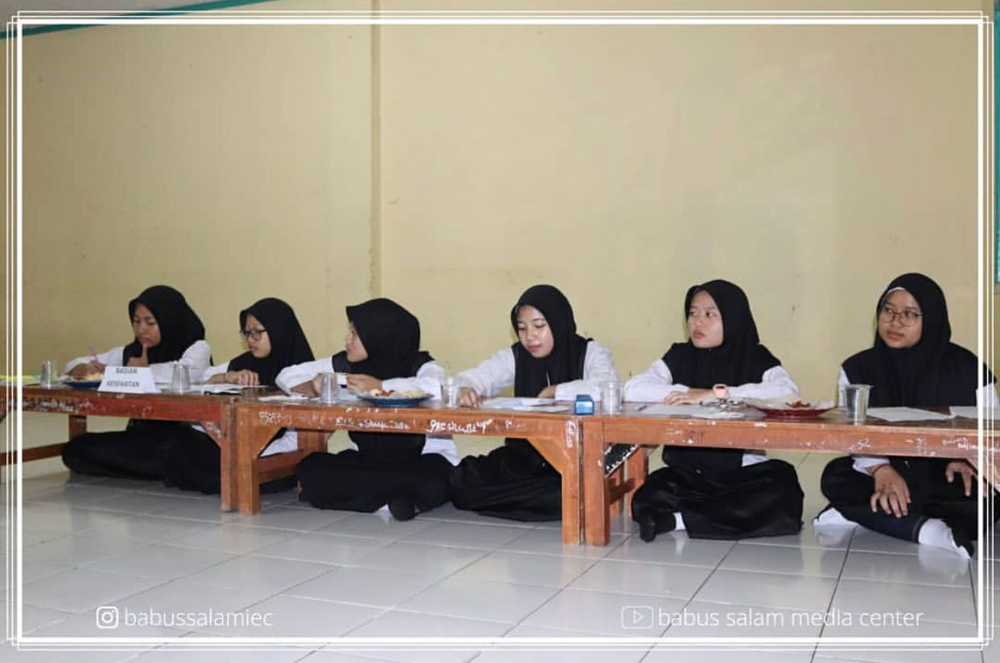
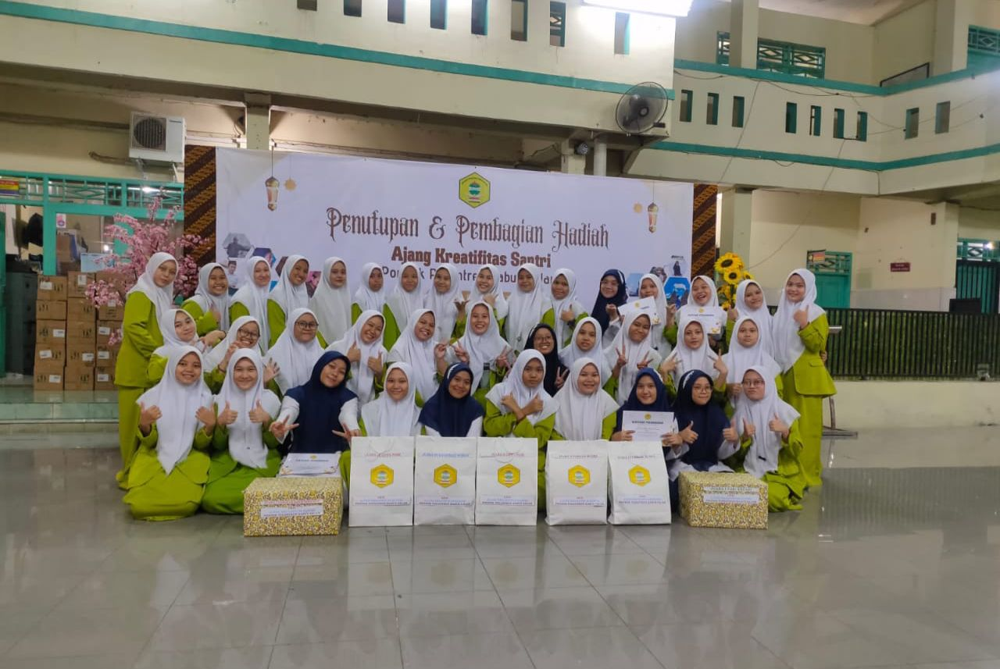
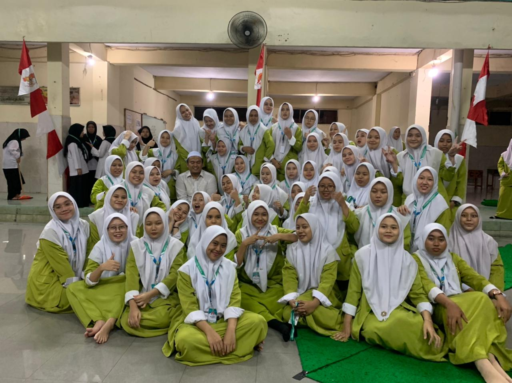
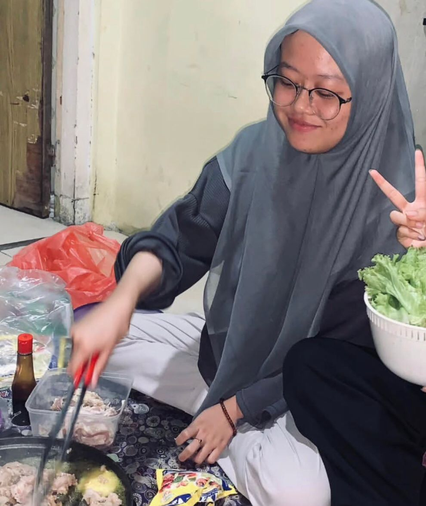
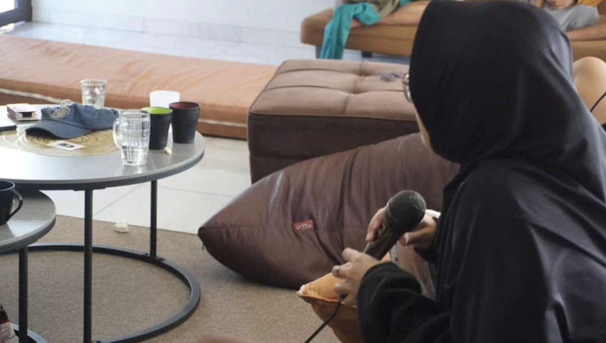

About Me
Hi! My name is Siti Nur Kholifah, but you can call me "Ipeh." I am a Computer Science student at Universitas Yatsi Madani with a strong passion for exploring various aspects of technology and software development. With a deep interest in programming, algorithms, and artificial intelligence, I am committed to continuously honing my technical and analytical skills. Always striving to solve problems with creative and effective solutions, I hope to make a meaningful contribution to the world of technology..
Education
- SDN JATAKE 6 || (2011 - 2017)
- SMP-SMA BABUS SALAM || (2017 - 2023)
- UNIVERSITAS YATSI MADANI || (2023 - Now)
Skills
- Microsoft Word & Excel
- Canva
- Visual Studio Code
Organization




- Healthy Section (ISPIBA) at Babus Salam Islamic Boarding School – (2021-2022)
- During my involvement in this organization, I gained valuable experiences that not only enhanced my technical abilities but also helped build my character and soft skills. I served as a member of the Health and Hygiene Division (ISPIBA) at Babus Salam Islamic Boarding School from 2021 to 2022. In this role, I developed leadership, teamwork, and responsibility skills. This experience taught me the importance of effective communication, time management, and quick yet accurate decision-making. I also learned how to foster harmonious collaboration within a team to achieve shared goals. Moreover, participating in this organization helped me become more disciplined, adaptive, and proactive in addressing various challenges. These lessons have been invaluable in shaping both my academic and professional journey.
Hobbies


- Menonton Drama Korea
- Memasak
- Bernyanyi
Contact Me
Email: info@uym.ac.id
Telepon: (021) 55726558
Alamat: Jl. Aria Santika No.40A, RT.005/RW.011, Margasari, Kec. Karawaci, Kota Tangerang, Banten 15114